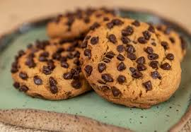

Bolo
Ingredientes
- 2 xícaras (chá) de açúcar
- 3 xícaras (chá) de farinha de trigo
- 4 colheres (sopa) de margarina
- 3 ovos
- 1 e 1/2 xícara (chá) de leite
- 1 colher (sopa) bem cheia de fermento em pó
Modo de Preparo
- 1
Bata as claras em neve e reserve.
- 2
Misture as gemas, a margarina e o açúcar até obter uma massa homogênea.
- 3
Acrescente o leite e a farinha de trigo aos poucos, sem parar de bater.
- 4
Por último, adicione as claras em neve e o fermento.
5
Despeje a massa em uma forma grande de furo central untada e enfarinhada.
- 6
Asse em forno médio 180 °C, preaquecido, por aproximadamente 40 minutos ou ao furar o bolo com um garfo, este saia limpo.
Cokies

Ingredientes
- 150 g de margarina
- 3/4 xícara (chá) de açúcar
- 1 xícara (chá) de açúcar mascavo
- 1 ovo
- 3/4 de xícara (chá) de farinha de trigo
- 1 colher (sopa) de fermento em pó
- 300 g chocolate em gotas ou picado
- canela e baunilha a gosto (opcional)
Modo de Preparo
- 1
Em um recipiente misture a margarina, açúcar e açúcar mascavo; bata até ficar uma mistura homogênea.
- 2
Adicione o ovo batido aos poucos e misture.
- 3
Ainda mexendo, acrescente a farinha aos poucos e a canela e/ou baunilha.
- 4
Por último, o fermento em pó.
- 5
Faça bolinhas pequenas.
- 6
Coloque em uma forma untada e achate as bolinhas deixando espaço entre elas.
- 7
Acrescente o chocolate picado ou em gotas em cima das bolinhas achatadas.
- 8
Asse em forno preaquecido a 200° C por aproximadamente 20 minutos, ou até as bordas dos cookies ficarem levemente escuras.
- 9
Deixar esfriar para desenformar (quando quentes os biscoitos ainda estarão moles).
Torta de Maçã

Ingredientes
Massa
- 1 e 1/2 pacotes de bolacha maisena
- 120 g de margarina sem sal
Doce de Maça
- 11 maçãs gala sem casca e raladas
- 9 colheres (sopa) de açúcar refinado
- 2 colheres (sopa) de canela
- 1 colher (sopa) suco de limão
Creme
-
1 lata de leite condensado
- 1 lata de creme de leite
- 4 gemas
- baunilha a gosto
Modo de Preparo
- 1
Triture a bolacha no processador (pode ser no liquidificador) e adicione a margarina até obter uma farofa úmida e homogênea.
- 2
Forre a base de uma forma de fundo removível. Reserve.
- 3
Leve ao fogo médio: a maçã ralada, o açúcar e o limão e cozinhe até a a água secar.
- 4
Acrescente a canela e deixe esfriar e após isso espalhe sobre a base de biscoitos. Reserve.
- 5
Leve ao fogo em uma panela: o leite condensado, as gemas e a baunilha e mexa até engrossar. Desligue o fogo e acrescente o creme de leite.
- 6
Despeje por cima do doce de maçã e polvilhe com canela.
- 7
Leve a torta para assar em forno preaquecido a 180°C por cerca de 20 minutos.
Mouse de Maracuja

Ingredientes
- 1 lata de leite condensado
- 1 lata de suco de maracujá (medida pela lata de leite condensado)
- 1 lata de creme de leite sem soro
Modo de Preparo
- 1
Em um liquidificador, bata o creme de leite, o leite condensado e o suco concentrado de maracujá.
- 2
Em uma tigela, despeje a mistura e leve à geladeira por, no mínimo, 4 horas.